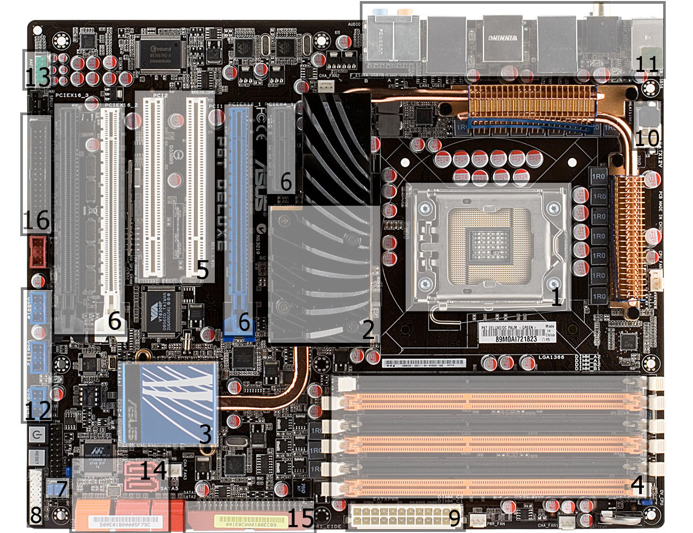

SCHEDA MADRE
La scheda madre o scheda di sistema , anche conosciuta con motherboard o mainboard ,
abbreviata MB, e' una parte fondamentale di un moderno personal computer: sotto forma di scheda elettronica principale raccoglie in se
tutta la circuiteria elettronica e i collegamenti di interfaccia tra i vari componenti interni principali del PC (CPU, memoria e le altre schede
elettroniche montate o alloggiate sopra) comprendendo quindi anche i bus di espansione e le interfacce verso le periferiche esterne.
Per eventuali approfondimenti allego in sovra impressione il link di riferimento.

Le schede madri si dividono in vari Standard e di seguito saranno analizzati i piu' importanti:
- ATX : La sigla ATX (dall'Inglese Advanced Technology Extended) e' uno standard diffuso che riguarda
il case, la scheda madre e l'alimentatore di un Personal Computer. Questo standard fu definito inizialmente da Intel e
rivisto successivamente con la release 2.01 che apporta delle leggere modifiche alla precedente versione 2.0, arrivando a più modiche
fino a quella usata ancora oggi datata 2013. Il precedente standard AT definiva in maniera
generica le strutture per i PC-AT di IBM; questo standard fornisce invece delle indicazioni piu' specifiche, considerando le
dimensioni della scheda madre, la posizione degli slot, dei fori per il fissaggio della scheda madre al case, dell'alimentatore
e del contenitore, le posizioni e il colore dei connettori e il collegamento dell'alimentazione.
Questo standard e' fondamentale per permettere l'assemblaggio di Personal computer a partire da componenti di vari
costruttori che, sebbene diversi tra loro, risultano compatibili e interscambiabili. Cosi' la sostituzione dei componenti e'
piu' semplice e non impedisce futuri upgrade utilizzando lo stesso case.
- BTX :Il BTX (Balanced Technology Extended) e' uno standard che definisce
dimensioni e layout di riferimento della scheda madre, originariamente pensato per sostituire lo storico formato ATX.
E' stato proposto, come per l'ATX, da Intel, che però nel 2006 ha annunciato la cancellazione del progetto.
Il motivo principale della sua progettazione e' stata l'ottimizzazione per ridurre al minimo i problemi che si sono venuti a
creare con l'evoluzione delle tecnologie, principalmente le grandi quantità di calore dissipato dalle CPU e schede video
piu' potenti.
A questo proposito il layout della scheda madre ha subito diverse modifiche, ad esempio il posizionamento degli slot ram
in modo che siano paralleli agli altri slot pci della scheda madre.
La modifica che più caratterizza questo standard comunque e' il ribaltamento speculare della scheda madre, che non viene
piu' montata sulla parete destra del case ma su quella sinistra, sempre per ragioni di efficienza del raffreddamento:
in questa maniera infatti il dissipatore della scheda video si viene a trovare orientato verso l'alto, non verso il basso,
avendo a disposizione spazio libero anziche' gli altri slot pci con altre eventuali schede, permettendo un miglior ricircolo di
aria fresca ed eventualmente l'utilizzo di dissipatori meno limitati in altezza.